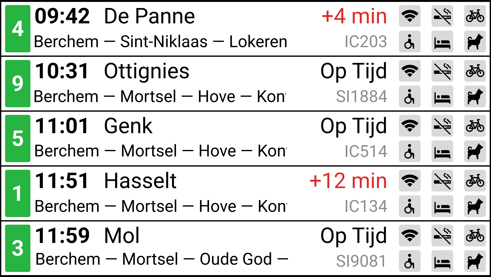
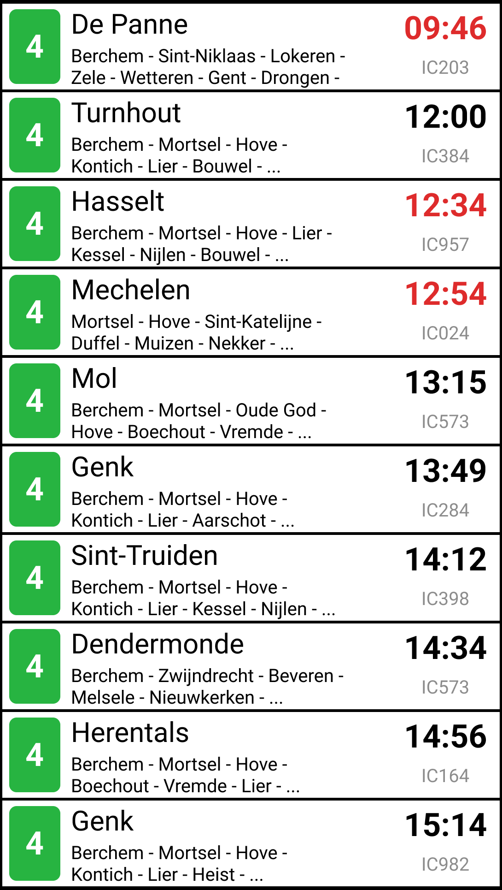
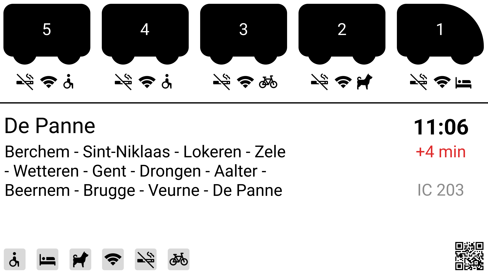
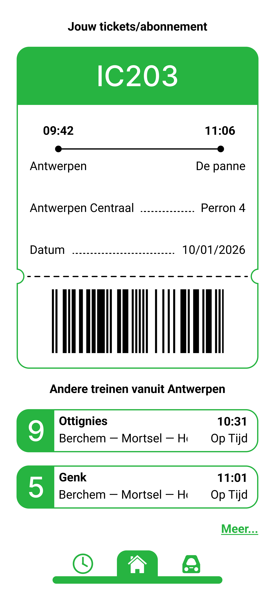
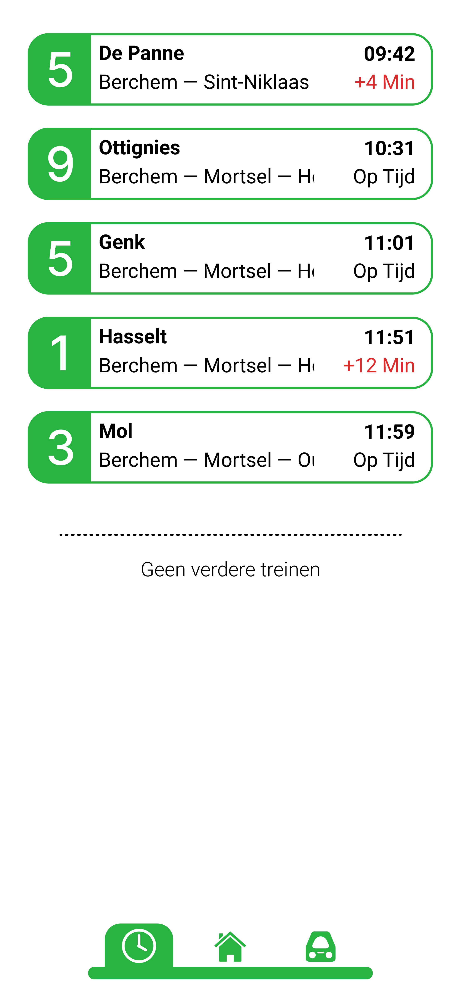
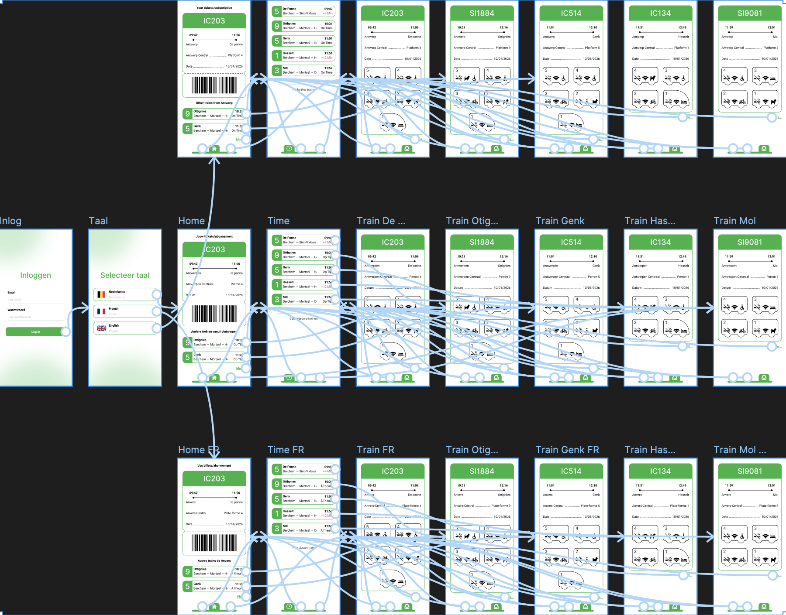

Schermen
Overzichtsscherm
Het overzichtsscherm is het scherm dat in de grote hal hangt wanneer je het station binnenwandelt. Dit scherm zou van beneden naar boven bewegen en de verdere treinen weergeven. Ik heb deze layout al vrij vroeg gekozen en ben hier ook heel content mee, omdat het duidelijk alle nodige info toont: het perron, de tijd, de status, de eindhalte, het type trein en wat wel en niet mag op de trein.
De tussenhaltes bewegen in mijn Figma-prototype ook van links naar rechts, maar omdat dit een foto is, zie je deze animatie hier niet.
Perronscherm
Op het perronscherm staan de eerste tien volgende treinen van dit perron. Bij deze borden valt de info weg over wat wel en niet mag, dit heb ik bewust gedaan omdat je zulke details toch eerder nakijkt op je gsm of op het overzichtscherm in de hal. Daarom toon ik hier alleen de essentiële informatie. De aankomsttijd laat nu enkel zien hoe laat de trein aankomt en of hij vertraagd is, niet met hoeveel minuten.
Dit design sluit sterk aan bij het andere scherm en zorgt voor een duidelijke visuele overeenkomst tussen de borden.
Wagonindelingsscherm
Bij het wagonindelingsscherm ben ik afgestapt van de groene huiskleur, omdat ik geen duidelijke plek vond om deze hier terug te brengen en het ook niet zo belangrijk aanvoelde. Wanneer ik een trein neem, weet ik vaak niet of ik in een dubbeldekker stap of in een trein vol graffiti, het voelt alsof het station en de treinen zelf sterk van elkaar verschillen. Daarom denk ik niet dat het noodzakelijk is om dit scherm qua kleur te laten overeenkomen.
Voor de rest staat hier alle mogelijke informatie op, aangevuld met een QR-code waarmee je naar de app wordt geleid om dit scherm in een andere taal te bekijken.
Applicatie
Inlogschermen
Het eerste inlogscherm is puur een prototype, omdat typbare velden in Figma zonder AI niet mogelijk zijn. Hier zou je je normaal kunnen inloggen. Daarna kies je je taal en word je doorgestuurd naar het homescreen in de taal die je hebt geselecteerd.
Visueel heb ik ze sterk op elkaar laten lijken, omdat ze samen één geheel vormen voor het inloggen en al een hint geven naar de groene kleur van de applicatie.
Home scherm
Na het inloggen kom je op dit scherm terecht. Hier zie je je abonnementen of tickets voor een specifieke trein, met de nodige informatie, en daarnaast alle andere treinen die vertrekken vanuit je gekozen station. Ik vind tickets en abonnementen iets heel logisch en belangrijk, omdat je deze zo niet elke keer opnieuw op je gsm moet downloaden en ook geen tabblad meer open hoeft te houden om je aankomsttijd te weten. Je kan ook op je ticket klikken om meer informatie over je trein te bekijken. Onderaan kan je klikken op de komende treinen die aankomen in Antwerpen, waarna je wordt doorgestuurd naar een meer informatief scherm van die trein. Of je kunt op ‘Meer...’ klikken voor alle treinen van die dag te kunnen zien.
Status scherm
Als je op de knop ‘Meer…’ of op de klok in de Nav-Bar hebt gedrukt, kom je op dit scherm terecht. Hier zie je de treinen die de komende dagen vertrekken of aankomen vanuit je gekozen station, wat in mijn prototype Antwerpen Centraal is. Je kan op elke trein klikken om de wagonindeling te bekijken of om extra informatie over die trein te zien.
Treindetails scherm
Als je in de navigatiebalk op de trein klikt, kom je terecht op de trein waarvoor je een ticket hebt, of op de eerstvolgende trein. Hier kan je uitgebreide informatie zien over de trein en wat er wel en niet mag per wagon. Wil je dit bekijken voor andere treinen, dan kan je op ‘Meer…’ drukken. Je wordt dan doorgestuurd naar het tijdscherm, waar je een andere trein kan selecteren.

Prototype
Hier zie je mijn prototype en alle interacties binnen de app. Ik heb de Nav-Bar eerst als component gemaakt, zodat deze maar één keer gekoppeld hoefde te worden aan de interacties. Dit zorgde wel voor problemen bij het toevoegen van meerdere talen, dus heb ik het later omgezet naar groepen zodra ik zeker was van geen fouten. Hier zie je ook duidelijk dat de taalkeuze je naar een andere flow stuurt, waarin alles in die specifieke taal wordt weergegeven.
Bij het maken van de app had ik last met het claimen van mijn Figma Pro via school, tot dit in 1 van de laatste dagen is gelukt. Maar hierdoor had ik geen tijd voor veel hover-effects, omdat een component in Figma niet twee interacties tegelijk kan hebben met een gratis account. Dus bij het eerst maken van mijn app had ik functionaliteit boven looks gezet wat ook wel logisch is.
